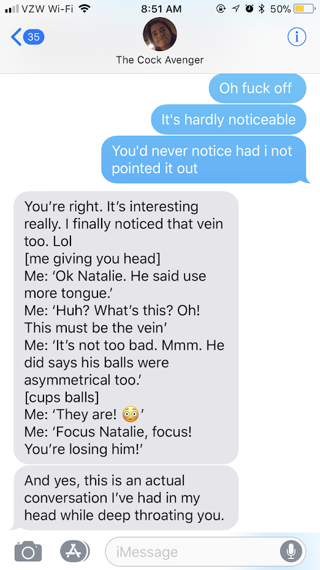
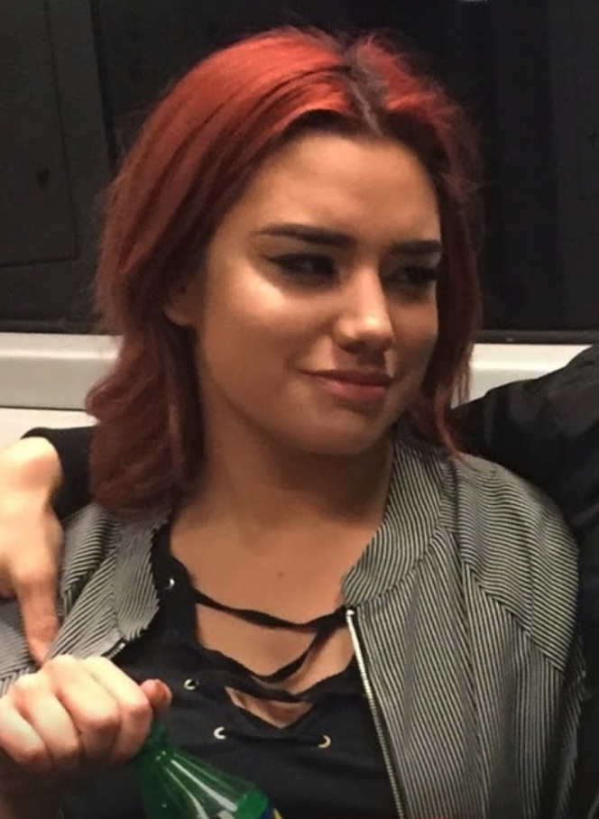

Drunk Natalie


Picture Perfect Natalie
This isn't your typical Natalie, but don't be surprised if you run into this Natalie at a bar. Her natural habitat: Bars. She knows how to enjoy herself and have a good time. ♥
Convos With Natalie
 The best part about Natalie.The conversations. Most attractive women are boring and don't say much. They expect you to start, continue and finish every good convo. And that's exactly why Natalie isn't like that. Natalie may not see it yet but her biggest advantage is NOT being attractive, forcing her to make great conversation a tool for mating. If you ever run into Natalie, prepare to witty banter and morbid humor.
Normal Natalie
While Natalie can be weird af, there is a normal side to her. And lemme tell you.. It's borning af. You won't care for this Natalie unless you like doing normal boring shit. Like picnics.